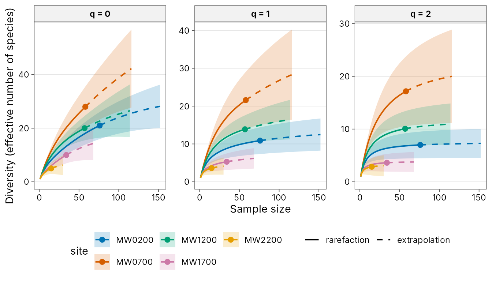
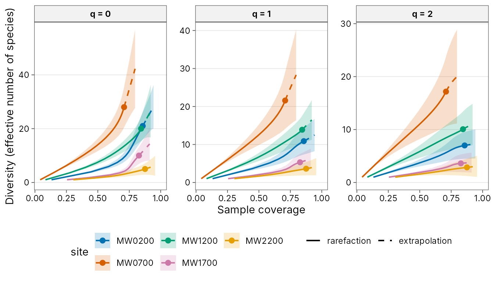
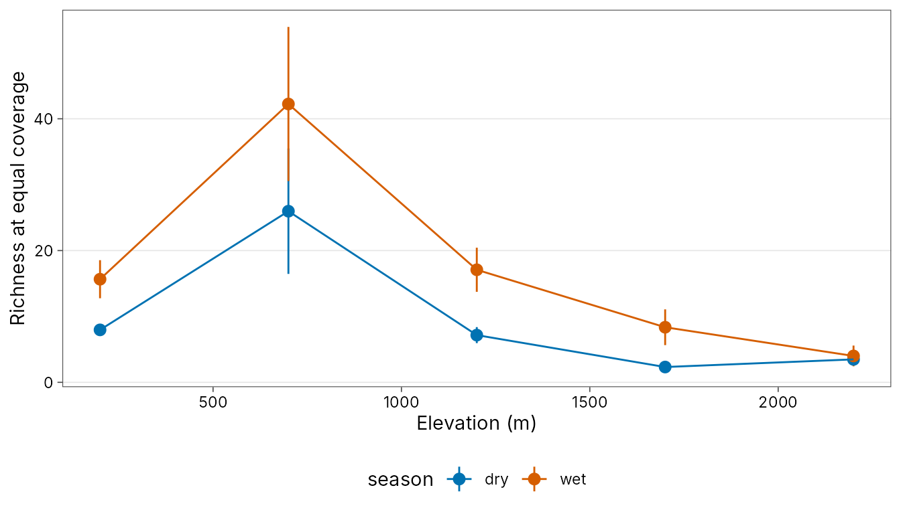

library(tidydiversity)
library(dplyr)
#>
#> Attaching package: 'dplyr'
#> The following objects are masked from 'package:stats':
#>
#> filter, lag
#> The following objects are masked from 'package:base':
#>
#> intersect, setdiff, setequal, union
library(ggplot2)
set.seed(42)The examples use png_ants: ants recorded at nutrient
baits along the Mt Wilhelm elevational gradient in Papua New Guinea, in
the dry and wet seasons (Moses et al. 2023). Each bait at which a
species was found counts as one occurrence.
Hill numbers
Hill numbers express diversity as an effective number of species.
Order q = 0 is richness, q = 1 weights species
by their frequency and q = 2 emphasises the dominant
species.
div_hill(png_ants, q = c(0, 1, 2), .by = season)
#> # A tibble: 30 x 5
#> season site q n diversity
#> <chr> <chr> <dbl> <dbl> <dbl>
#> 1 dry MW0200 0 47 16
#> 2 dry MW0200 1 47 12.3
#> 3 dry MW0200 2 47 9.91
#> 4 wet MW0200 0 76 21
#> 5 wet MW0200 1 76 10.9
#> 6 wet MW0200 2 76 6.99
#> 7 dry MW0700 0 23 15
#> 8 dry MW0700 1 23 11.8
#> 9 dry MW0700 2 23 8.67
#> 10 wet MW0700 0 58 28
#> # i 20 more rowsSample coverage
Raw counts depend on sampling effort. Sample coverage estimates how complete each sample is.
div_coverage(png_ants, .by = season)
#> # A tibble: 10 x 7
#> season site n s_obs f1 f2 coverage
#> <chr> <chr> <dbl> <int> <int> <int> <dbl>
#> 1 dry MW0200 47 16 5 5 0.898
#> 2 wet MW0200 76 21 11 5 0.857
#> 3 dry MW0700 23 15 12 1 0.482
#> 4 wet MW0700 58 28 17 3 0.709
#> 5 dry MW1200 29 13 7 3 0.766
#> 6 wet MW1200 57 20 9 3 0.844
#> 7 dry MW1700 17 5 1 2 0.953
#> 8 wet MW1700 34 10 6 2 0.827
#> 9 dry MW2200 13 6 3 1 0.781
#> 10 wet MW2200 15 5 2 1 0.876Asymptotic estimates
div_estimate() gives Chao1 richness, the Chao et
al. (2013) Shannon estimator and the unbiased Simpson estimator, with
bootstrap intervals.
div_estimate(png_ants, .by = season, nboot = 50) |>
filter(q == 0)
#> # A tibble: 10 x 8
#> season site q observed estimate se lower upper
#> <chr> <chr> <dbl> <dbl> <dbl> <dbl> <dbl> <dbl>
#> 1 dry MW0200 0 16 18.4 3.55 16.3 35.7
#> 2 wet MW0200 0 21 32.9 12.5 23.2 85.3
#> 3 dry MW0700 0 15 83.9 31.2 44.5 176.
#> 4 wet MW0700 0 28 75.3 54.2 35.9 313.
#> 5 dry MW1200 0 13 20.9 9.83 14.2 65.6
#> 6 wet MW1200 0 20 33.3 15.3 22.2 101.
#> 7 dry MW1700 0 5 5.24 2.11 5.00 19.4
#> 8 wet MW1700 0 10 18.7 8.09 11.9 50.8
#> 9 dry MW2200 0 6 10.2 4.35 6.77 28.5
#> 10 wet MW2200 0 5 6.87 2.30 5.28 17.3Rarefaction and extrapolation
div_rarefy() interpolates each sample down to smaller
sizes and extrapolates up to twice its size. The values match the iNEXT
package.
curves <- png_ants |>
filter(season == "wet") |>
div_rarefy(q = c(0, 1, 2), nboot = 30)
curves
#> # A tibble: 570 x 8
#> site q m method diversity coverage lower upper
#> <chr> <dbl> <dbl> <chr> <dbl> <dbl> <dbl> <dbl>
#> 1 MW0200 0 1 rarefaction 1 0.132 1 1.00
#> 2 MW0200 0 5 rarefaction 3.92 0.445 3.54 4.30
#> 3 MW0200 0 9 rarefaction 5.90 0.585 5.07 6.73
#> 4 MW0200 0 13 rarefaction 7.44 0.655 6.21 8.67
#> 5 MW0200 0 17 rarefaction 8.75 0.695 7.16 10.3
#> 6 MW0200 0 21 rarefaction 9.93 0.721 8.00 11.9
#> 7 MW0200 0 25 rarefaction 11.0 0.740 8.78 13.3
#> 8 MW0200 0 29 rarefaction 12.0 0.754 9.51 14.6
#> 9 MW0200 0 33 rarefaction 13.0 0.766 10.2 15.8
#> 10 MW0200 0 38 rarefaction 14.1 0.780 11.0 17.3
#> # i 560 more rows
autoplot(curves)
Plotting against coverage shows how complete each sample is:
autoplot(curves, x = "coverage")
Fair comparisons
Compare sites at equal completeness with
div_standardise(). With no level given, each group is
standardised to the lowest coverage that its sites reach at twice their
sample size.
std <- div_standardise(png_ants, .by = season, nboot = 50)
std
#> # A tibble: 30 x 10
#> season site q m method coverage diversity se lower upper
#> <chr> <chr> <dbl> <dbl> <chr> <dbl> <dbl> <dbl> <dbl> <dbl>
#> 1 dry MW0200 0 11.6 rarefaction 0.565 7.96 0.444 7.09 8.83
#> 2 dry MW0200 1 11.6 rarefaction 0.565 7.10 0.502 6.11 8.08
#> 3 dry MW0200 2 11.6 rarefaction 0.565 6.24 0.526 5.21 7.27
#> 4 wet MW0200 0 45.1 rarefaction 0.796 15.7 1.47 12.8 18.5
#> 5 wet MW0200 1 45.1 rarefaction 0.796 9.57 1.24 7.14 12.0
#> 6 wet MW0200 2 45.1 rarefaction 0.796 6.63 0.914 4.84 8.42
#> 7 dry MW0700 0 46.0 extrapolation 0.565 26.0 4.86 16.5 35.5
#> 8 dry MW0700 1 46.0 extrapolation 0.565 17.9 5.71 6.67 29.0
#> 9 dry MW0700 2 46.0 extrapolation 0.565 10.5 5.07 0.566 20.4
#> 10 wet MW0700 0 116 extrapolation 0.796 42.2 5.97 30.5 53.9
#> # i 20 more rows
std |>
left_join(distinct(png_ants, site, elevation), by = "site") |>
filter(q == 0) |>
ggplot(aes(elevation, diversity, colour = season)) +
geom_pointrange(aes(ymin = lower, ymax = upper)) +
geom_line() +
labs(x = "Elevation (m)", y = "Richness at equal coverage") +
scale_colour_tidydiversity() +
theme_tidydiversity()